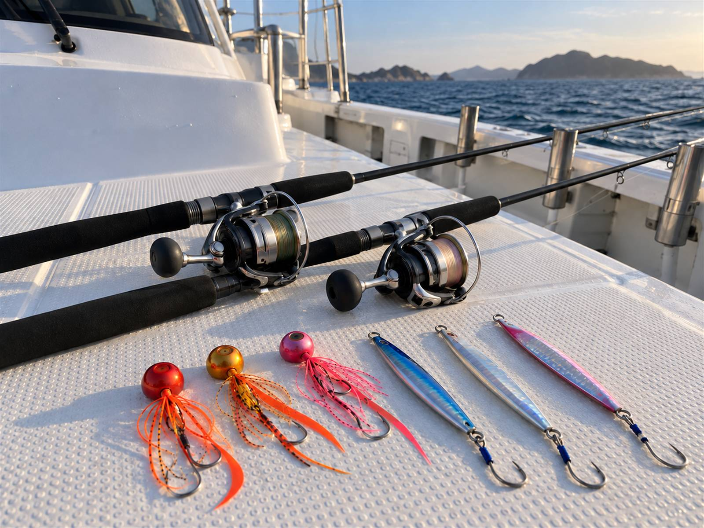
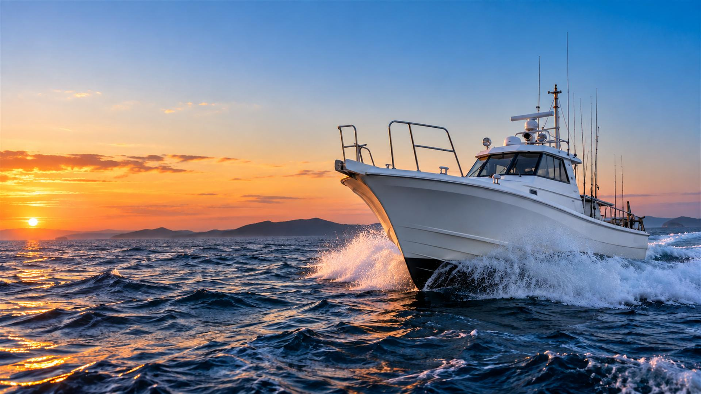
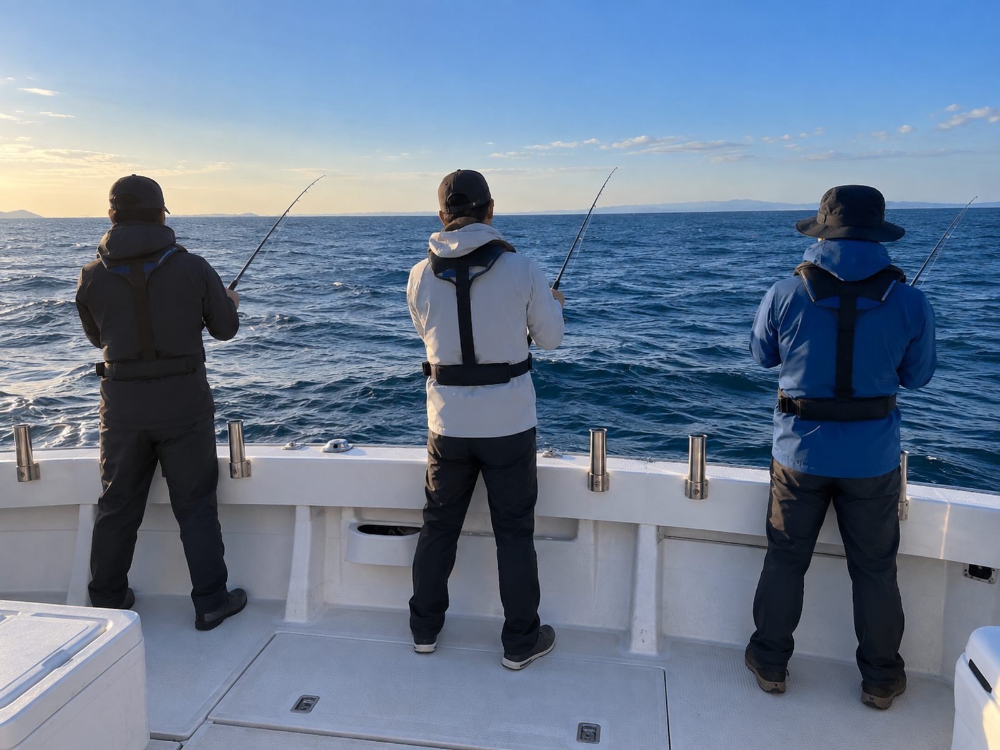
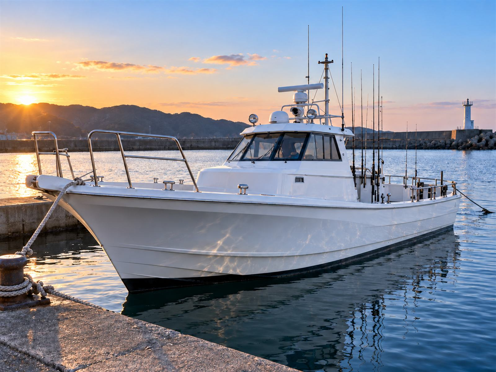
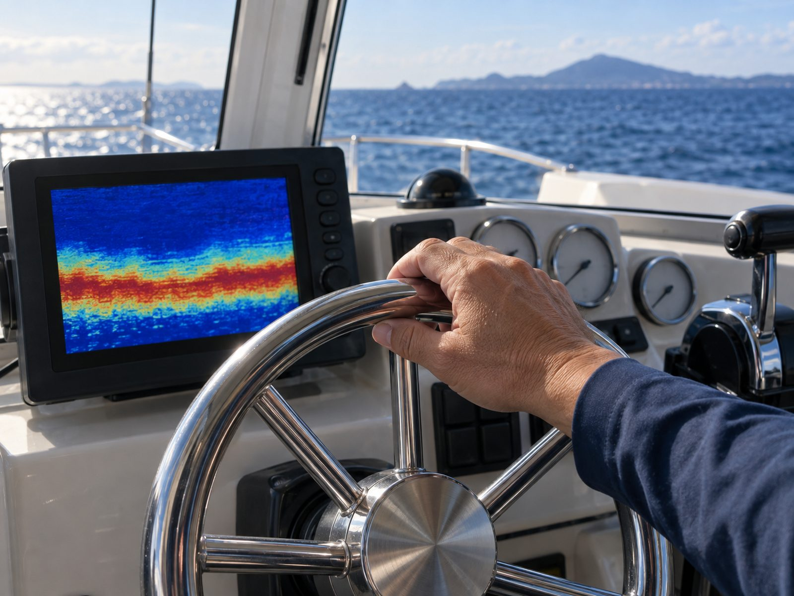
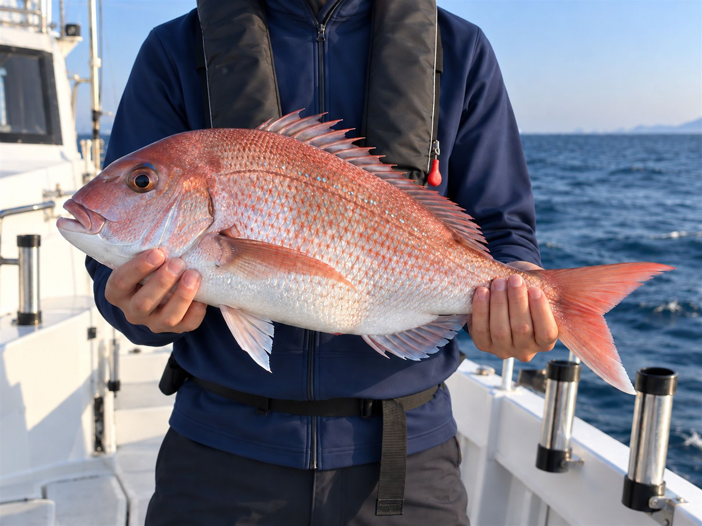
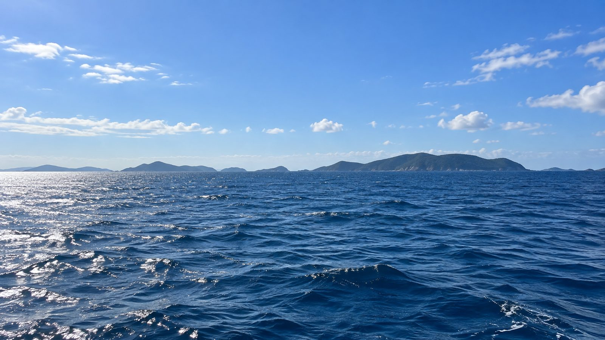
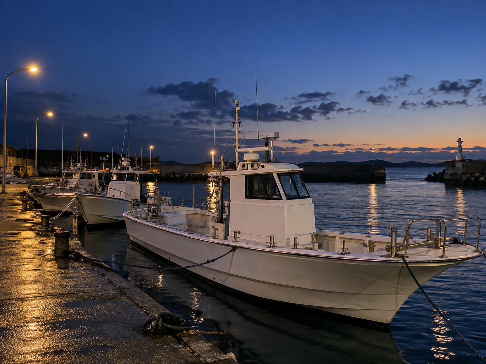

水曜をのぞく毎日
SLJ・タイラバ便
05:00 — 13:00
- 乗合（1名）
- 11,000円
- 貸切（8名まで）
- 80,000円
真鯛・ヒラマサ・

下関市豊浦町から出船する、
出船の判断は、
法律で決められた
船上で血抜きと
乗合は1名から。

真鯛・ヒラマサ・

ケンサキイカ。
電話がつながらない、
残りの席数を見ながら、
予約後の画面から
お店のLINEに
集合時刻と場所を
船長が海を見て判断し、
見本
実際に届く

| 船名 | 潮騒丸（しおさいまる） |
|---|---|
| 船体 | 全長 約12m・FRP |
| 定員 | 釣りのお客様 8名まで |
| 設備 | 魚群探知機・ |
| 保険 | 遊漁船業者の |
| 登録 | 山口県知事登録 第0000号 （サンプルのため架空の番号です） |

響灘は、潮と風しだいで 表情がまるで変わる海です。 無理な出船はしません。 そのかわり、 出ると決めた日は、 一匹でも多く 釣っていただけるよう 全力で案内します。 船長（サンプルのため架空の人物です）


乗船中の着用は
酔い止めは
竿とリールは
雨だけなら出船します。
出船の前日18時までは、
できます。
保護者の方と

| 集合場所 | 〇〇漁港 東側の岸壁 （サンプルのため架空です） |
|---|---|
| 集合時刻 | 出船の20分前 |
| 駐車場 | 漁港の駐車場（無料） |
| 所在地 | 山口県下関市豊浦町 （サンプルのため番地はありません） |
まだ暗い時間の集合です。